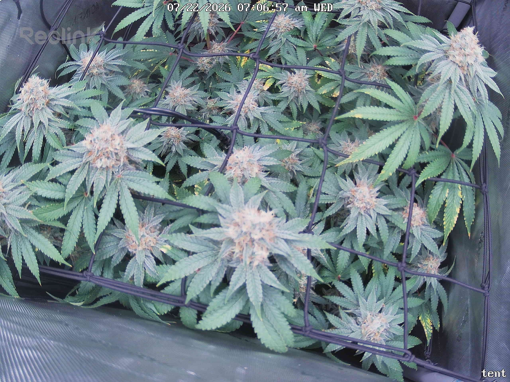
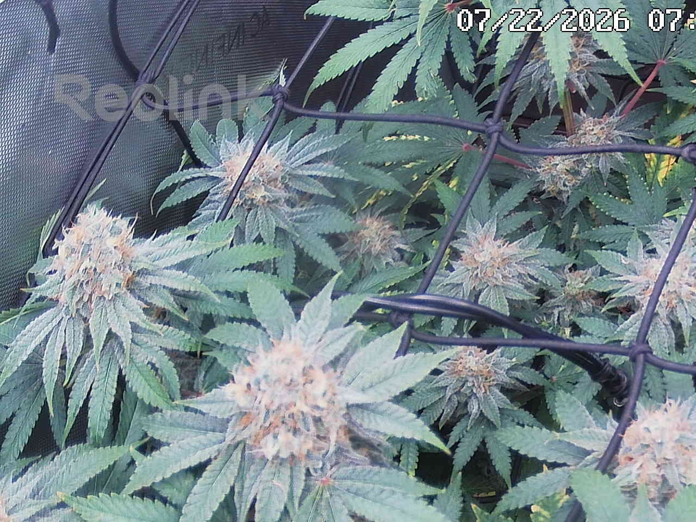
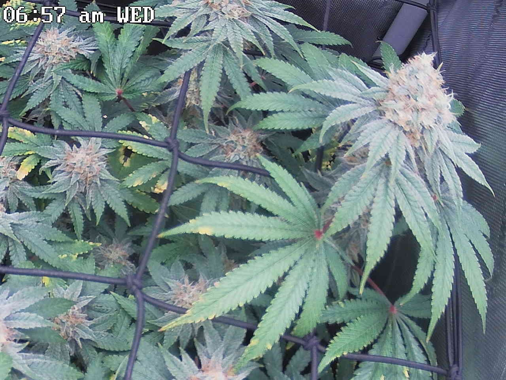
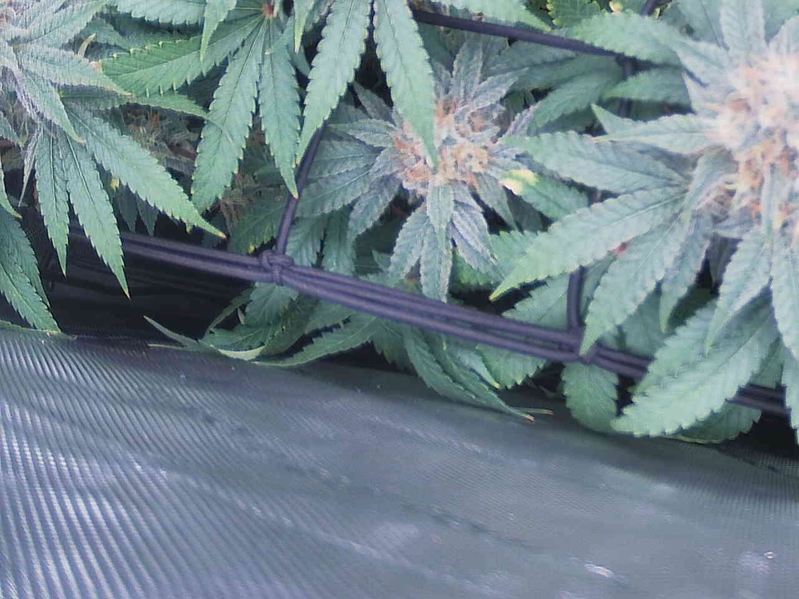
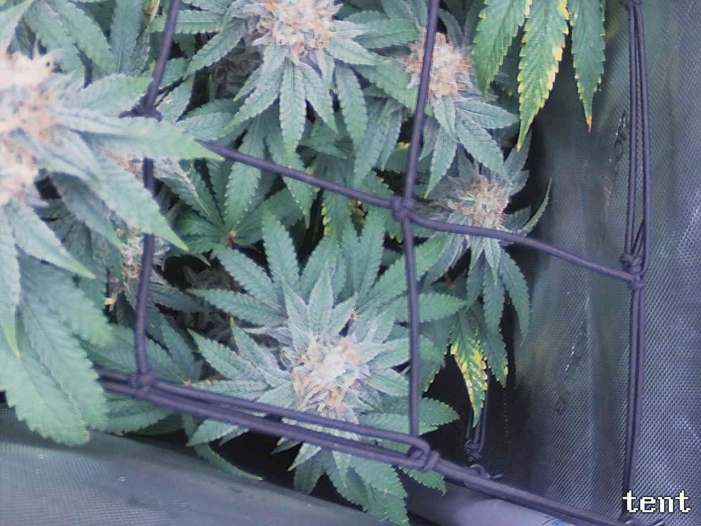
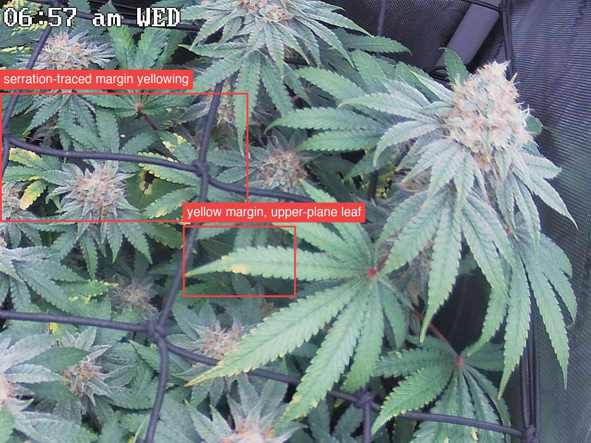
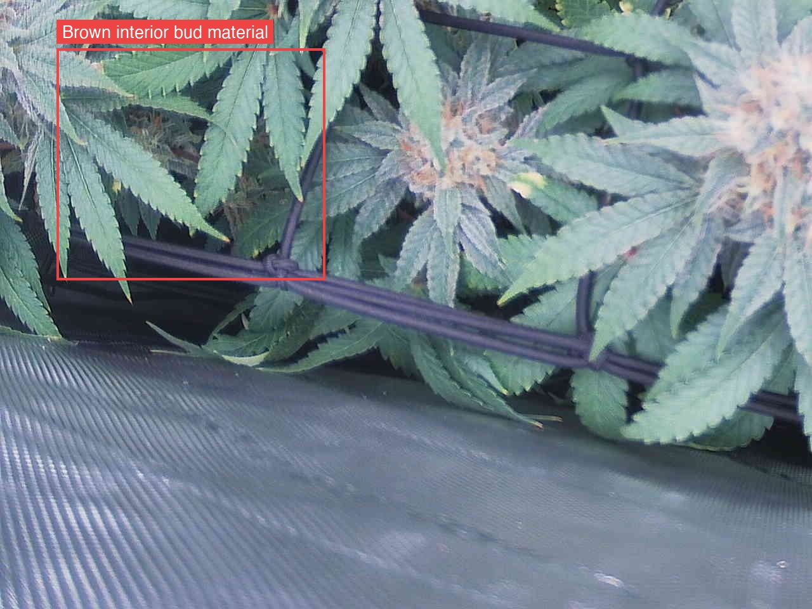
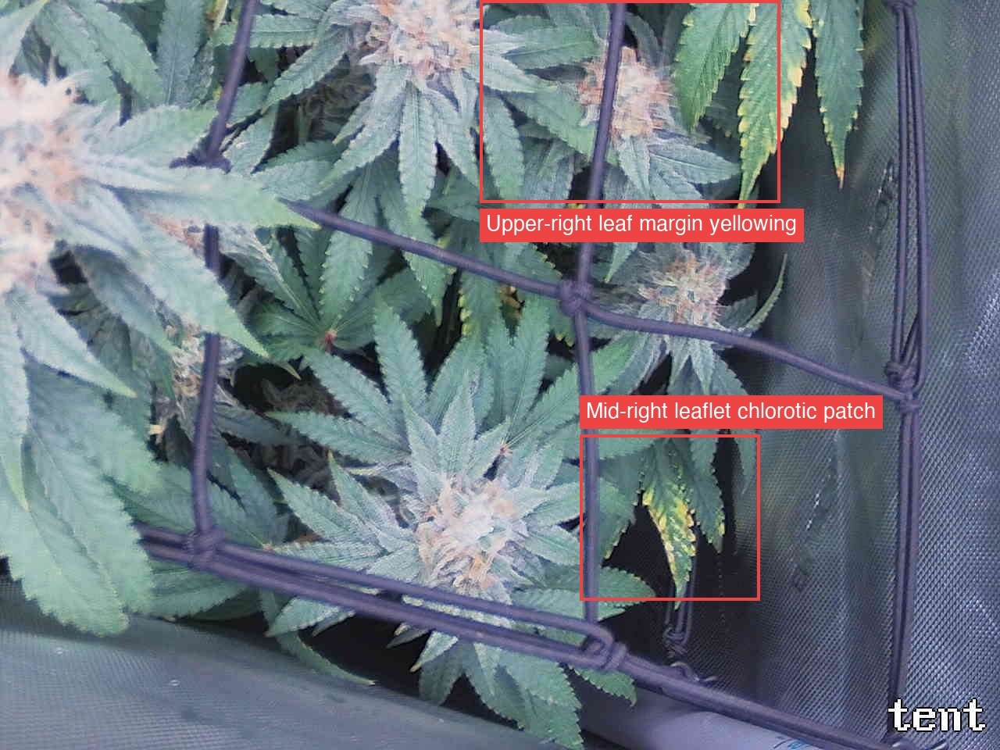

Per-quadrant analysis — the canopy shot was split into a 2x2 grid and each region compared against the previous day.
Three of four quadrants are marked ATTENTION and the fourth (top-left) returned no usable read at all — an API error truncated it, so ~25% of the canopy is unassessed this round and the totals below are an undercount. The plant is structurally sound and on-track for ~day 49 of 12/12 — canopy closed, leaves flat and turgid, no wilt/claw/bleaching, pistils creaming and tanning further on every visible top, no webbing, stippling, or insects — but two independent problem threads are live: (1) marginal/serration-tracing yellowing in top-right and bottom-right, which extended day-over-day in bottom-right (one new leaflet on the upper-right fan leaf, plus a broader mid-right blotch) and, critically, now includes a well-lit upper-plane leaf in top-right, which breaks the "upper canopy stays green longest" criterion that would otherwise let this be written off as senescence; and (2) bottom-left's unresolved tan/brown fibrous interior mass in a deep-shade pocket, stable over 24h and most consistent with spent pistils on a larfy interior bud, but not discriminable from early botrytis at this resolution. Both bottom-left and bottom-right also report camera drift between frames (bottom-left ~16% of tile height), so all area/coverage comparisons this round are angle-confounded and the "extension" calls rest on same-leaf matching, not same-coordinate; re-aim and lock the mount.
Single most important action: physically part the leaves at the bottom-left flagged pocket (box 7,8,40,46) and inspect/squeeze for gray fuzz or a mushy crumbling core — late-flower botrytis is the only finding here with irreversible, fast-moving downside. Do it in the same session as the two deferred leaf-level checks that every quadrant asked for and no one has done: macro shots of both surfaces of the flagged leaves to separate uniform-whole-leaf (N/fade) from interveinal (Mg) from margin-only (K/K lockout), and a first loupe trichome reading, which the KB names as the tiebreaker for senescence-vs-deficiency and which does not exist for this grow.
Bud sites (whole plant, estimate): 15-25
API Error: Connection closed mid-response. The response above may be incomplete.

images/deficiencies/potassium/potassium-deficiency-marginal-yellowing-cannabis-reddit-confirmed.jpg — the serration-outline morphology matches, but the exemplar shows it across upper/new growth plant-wide, while here it is confined to interior/shaded leaves.Bud sites: 6-10

images/diseases/bud-rot/bud-rot-early-cola-crown-cannabis-reddit-confirmed.jpg and could not discriminate. Action: physically part the leaves at that spot, look/squeeze for gray fuzz or a mushy, crumbling core, per 05-diseases05 · Diseases (Mold, Rot, Mildew)Fungal problems are mostly an environment story: humidity, temperature, and airflow. Prevention beats treatment because by the time buds are affected, that material is usually lost.Covers: Bud rot / Botrytis (the dangerous one in flower) · Powdery mildew (PM) · Leaf septoria (yellow leaf spot) — outdoor · Root rot (Pythium) · Prevention (covers all three)GrowBuddy knowledge base · 05-diseases.md.Bud sites: 4-7
knowledge_base/images/diseases/bud-rot/bud-rot-early-cola-crown-cannabis-reddit-confirmed.jpg.images/deficiencies/potassium/), is not confirmed or excluded by this tile: no macro single-leaf shot exists in this set.images/reference/red-petioles-benign/).
images/deficiencies/potassium/potassium-deficiency-marginal-yellowing-cannabis-reddit-confirmed.jpg: the shape of the margin yellowing matches, but the exemplar shows it across the whole upper plant, whereas here it is confined to two outer/lower leaves under closed canopy with every top and sugar leaf deep green. Suggested action: pull those two specific leaves' undersides into a phone macro shot and check for interveinal pattern/rusty spotting vs. uniform margin fade, and note whether any leaf above the net plane starts the same pattern — that is the discriminator per 16-senescence16 · Senescence (natural fade) — and how to tell it from a problemLate-life yellowing of a cannabis plant is often not a deficiency. It is senescence: an evolved, age-programmed shutdown in which the plant strips nutrients out of old leaves and moves them into the buds. The diagnostic problem is that senescence and a real deficiency share the same mechanism and the same look, so the…Covers: What senescence actually is (mechanism) · Timeline by plant age · Distinguishing senescence from the look-alikes · Deliberate "fade" / flushing — folklore vs evidence · Age-based decision rulesGrowBuddy knowledge base · 16-senescence.md (rule 4) and 02-deficiencies02 · Nutrient Deficiencies & ToxicitiesAlways run the framework first (pH/watering, then location). Fixes below assume a synthetic/bottled-nutrient grow; for living soil, see 07 (the remedy is amendments/teas, not a bottle).Covers: Mobility cheat sheet · Mobile nutrients · Immobile nutrients · Toxicities & overfeeding · Hard ruleGrowBuddy knowledge base · 02-deficiencies.md (K early tell).images/diseases/bud-rot/bud-rot-early-cola-crown-cannabis-reddit-confirmed.jpg and this tile does not resemble it. The dark interior brown material visible through the canopy gaps (~28-45, 47-60) is dried/withered older leaf tissue, present identically in both frames.Bud sites: 5-8